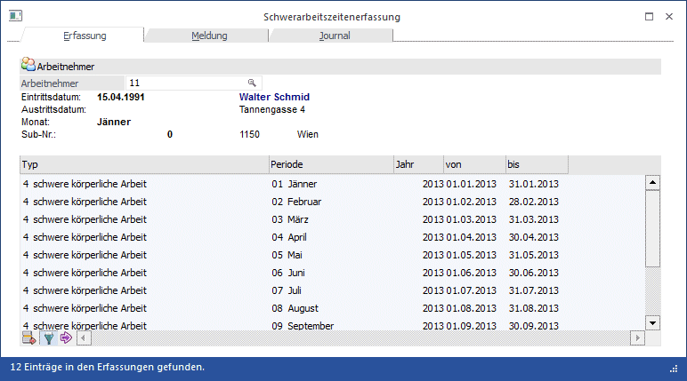
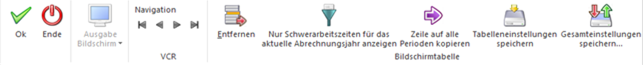

Im ersten Register des Fensters kann die Erfassung der Schwerarbeitszeiten durchgeführt werden. Grundsätzlich ist man dabei nicht an einen Zeitraum gebunden, d.h. die Erfassung der Schwerarbeitszeiten kann zu einem beliebigen Zeitpunkt erfolgen. Es muss nur gewährleistet sein, dass die Meldung bis Ende Februar den Folgejahres übermittelt wird. Es sollte aber darauf geachtet werden, dass die Erfassung zeitnah durchgeführt wird, damit dann nicht am Jahresende zu viele Daten auf einmal erfasst werden müssen.
Durchführung

Zuerst muss im Feld
Ø Arbeitnehmer
der Arbeitnehmer eingetragen werden, für den die Schwerarbeitszeiten erfasst werden sollen. Wie die AN-Nummer eingegeben werden kann, dazu gibt es mehrere Möglichkeiten. Details dazu entnehmen Sie bitte dem Kapitel Aufruf einer AN-Nummer. Wurde ein AN ausgewählt bzw. eingetragen werden darunter die wichtigsten Daten (Name, Adresse, Eintritt, Austritt) angezeigt. Wurden für den aufgerufenen AN bereits Schwerarbeitszeiten im aktuellen Abrechnungsjahr erfasst, werden diese in der Tabelle angezeigt.
In der Tabelle können nun die entsprechenden "besonders belastenden Tätigkeiten" erfasst werden, wobei folgende Felder zur Bearbeitung zur Verfügung stehen:
Ø Typ
Aus der Auswahllistbox kann der Typ der Schwerarbeit gewählt werden. Dabei stehen folgende Optionen zur Verfügung:
ü 1 Schicht- oder Wechseldienst
ü 2 regelmäßige Hitze oder Kälte
ü 4 schwere körperliche Arbeit
ü 5 berufsbedingte Pflege
ü 6 Anspruch auf Pflegegeld (mindestens Stufe 3)
Ø Periode
Aus der Auswahllistbox kann die entsprechende Periode ausgewählt werden, wobei immer die aktuelle Abrechnungsperiode vorgeschlagen wird.
Ø Jahr
Hier muss das Jahr eingetragen werden, für das die Daten erfasst werden. Es wird immer das aktuelle Abrechnungsjahr vorgeschlagen.
Beim Typ "1 - Schicht- oder Wechseldienst " können die Felder Periode und Jahr nicht bearbeitet werden.
Ø Von - bis
Durch das Ausfüllen der beiden Felder "Periode" und "Jahr" werden die Felder "von" und "bis" automatisch ausgefüllt und können bei Bedarf (Ein- oder Austritt) ggf. noch verändert werden.
Buttons

Ø OK
Durch Anklicken des OK-Buttons bzw. durch Drücken der F5-Taste werden alle Erfassungszeilen gespeichert und der nächste AN kann aufgerufen werden. Mit der Tastenkombination SHIFT + F5 können die bestehenden Erfassungszeilen ebenfalls gespeichert werden, allerdings bleibt dann der AN erhalten.
Ø Ende
Durch Drücken der ESC-Taste wird das Fenster geschlossen, alle Änderungen gehen verloren.
Ø Navigation
Durch die VCR-Buttons kann zwischen den einzelnen Arbeitnehmern gewechselt werden, ohne eine Erfassung speichern zu müssen oder einen neuen AN aufzurufen.
 Wechseln zur
Erfassung des ersten Arbeitnehmers (Tastatur STRG + SHIFT + POS1)
Wechseln zur
Erfassung des ersten Arbeitnehmers (Tastatur STRG + SHIFT + POS1)
 Wechseln zur
Erfassung des vorherigen Arbeitnehmers (Tastatur SHIFT - [numerischer
Ziffernblock])
Wechseln zur
Erfassung des vorherigen Arbeitnehmers (Tastatur SHIFT - [numerischer
Ziffernblock])
 Wechseln zur
Erfassung des nächsten Arbeitnehmers (Tastatur SHIFT + [numerischer
Ziffernblock])
Wechseln zur
Erfassung des nächsten Arbeitnehmers (Tastatur SHIFT + [numerischer
Ziffernblock])
 Wechseln zur
Erfassung des letzten Arbeitnehmers (Tastatur STRG + SHIFT + ENDE)
Wechseln zur
Erfassung des letzten Arbeitnehmers (Tastatur STRG + SHIFT + ENDE)
Hinweis:
Beim Blättern der Arbeitnehmer in der Schwerarbeitszeiterfassung mit den VCR-Buttons werden inaktive AN nicht berücksichtigt.
Ø Entfernen
Durch Anklicken des Entfernen-Buttons wird die aktuell ausgewählte Erfassungszeile gelöscht.
Ø Aktuelles Jahr
Der Button "Nur Schwerarbeitszeiten für das aktuelle Abrechnungsjahr anzeigen" ist standardmäßig aktiviert und bewirkt, dass nur die aktuellen Erfassungszeilen angezeigt werden. Sollen auch Erfassungszeilen aus anderen Abrechnungsjahren sichtbar gemacht werden, dann kann das durch deaktivieren des Buttons bewirkt werden.
Ø Zeile auf alle Perioden kopieren
Mit diesem Button kann die Erfassungszeile auf alle Perioden des aktuellen Jahres kopiert werden. Dies macht nur dann Sinn, wenn der AN auch das ganze Jahr über diese Beschäftigung ausgeführt hat.
Ø Tabelleneinstellungen speichern
Die Spalten einer Tabelle können grundsätzlich an beliebige Positionen verschoben, bzw. in der Breite entsprechend angepasst werden. Durch Anwahl des Buttons "Tabelleneinstellungen speichern" werden die Einstellungen benutzerspezifisch gespeichert und bei dem nächsten Aufruf des Programmpunktes wieder vorgeschlagen.
Ø Gesamteinstellungen speichern
Im Gegensatz zu "Tabelleneinstellungen speichern" können mit "Gesamteinstellungen speichern" mehrere Tabellenaufbauten gespeichert und nach Wunsch geladen werden. Zusätzlich werden Sonderfunktionen der Tabelle (z.B. "Spalte gruppieren") ebenfalls bei der Speicherung bedacht.